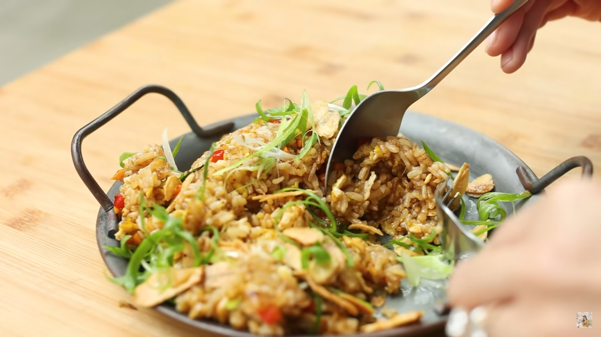

Garlic fried Rice
Go back to all recipes

Description:
Couldn't miss adding my favourite type of fried rice,
Ingredients
- 8 clove garlic, sliced
- 1-2 serving rice
- 1-2 pc egg
- ¼ pc onion, diced into ½-cm squares
- 1-2 pc green onion, sliced
- 2 tbsp soy sauce
- 1 tbsp butter
- 1 tsp stock powder / dashi powder
- ¼ tsp pepper
- 2 tsp sugar
- ½ tbsp flour
- ½ pc carrot, diced into 3-mm squares
- ⅙ pc red bell pepper, diced
Steps:
- Slice the garlic. Coat with a little bit of flour and fry until golden. Set aside.
- Heat the pan again. Add the eggs in and stir, then add the onion, carrots, bell peppers, and green onions.
Mix well.
- Add the rice in and stir. Then, add the soy sauce, dashi powder, sugar, pepper, and butter in. Mix well.
- For the green onion garnish, rinse with cold water.
- Serve the Garlic Fried Rice with fried garlic and green onions.